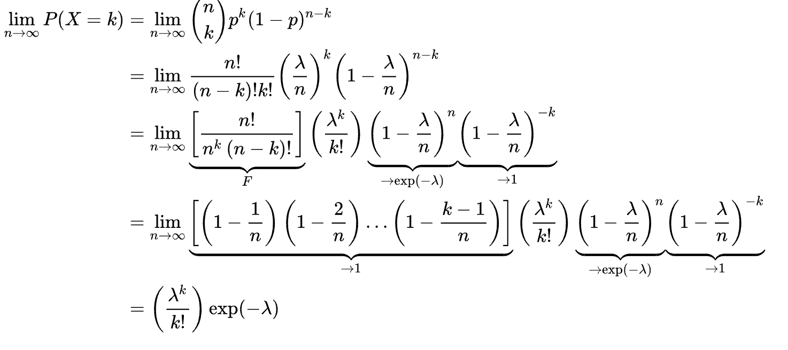
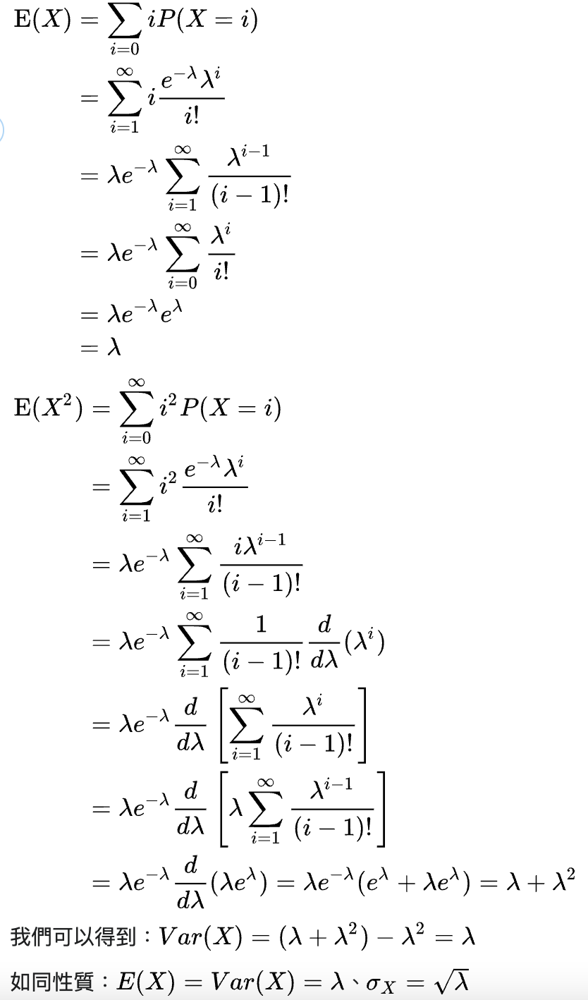
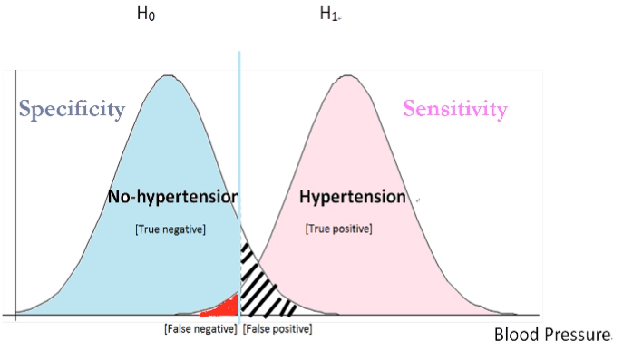
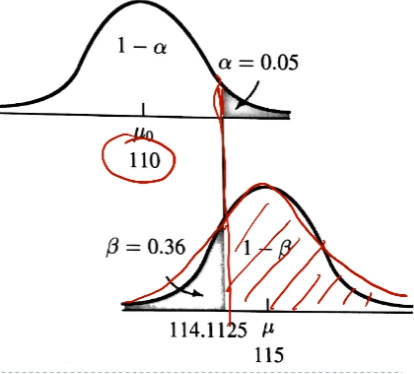
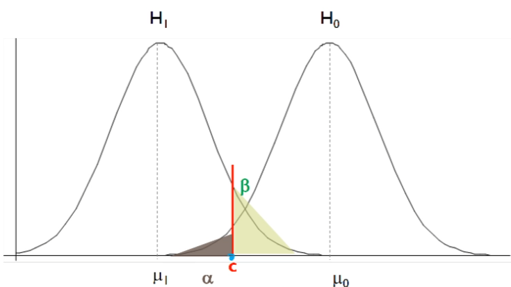
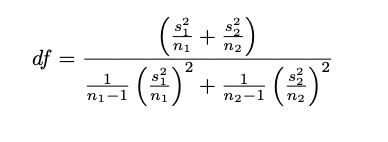

accuracy=FT
sensitivity=recall=真實PTP
specificity=真實NTN
precision=PTP
F−score=recall+precision2recall⋅precision
oddsafter=oddsbefore1−septicitysensitivity
RoC Curve 上一點斜率
n次中k次
f(k,n,p)=Pr(X=k)=(kn)pk(1−p)n−kE[X]=npVar[X]=np(1−p).
定義在(0,1)區間的連續機率分布，有兩個母數α,β>0，即為先驗成功與失敗。把發生率p當作變數(x)，在現有數據下去預測p值是多少（即再做一次實驗），所以維護E[X]=α+βα, 變異數是二項分佈下的E[nY]，所以Var(X)=E(X−μ)2=(α+β)2(α+β+1)αβ。
f(x;α,β)=∫01uα−1(1−u)β−1duxα−1(1−x)β−1=Γ(α)Γ(β)Γ(α+β)xα−1(1−x)β−1=B(α,β)1xα−1(1−x)β−1
Note
Beta distribution 和二項分佈共軛
即做很多次(n→∞)成功率p的白努力試驗，成功次數λ=np。卜瓦松分布適合於描述單位時間內隨機事件發生的次數的機率分布。


存活率 P(X=0)
P(X=0)=exp−λ=exp−hazard×time
Poisson 的共軛，描述單位時間發生率分佈
f(x)=Γ(α)βαxα−1e−βx
E[X]=βα, Var[X]=β2α
連續分佈，母數 μ,σ2
f(x)=2πσ1exp(−21(σx−μ)2)
ϕ(z)=2π1exp(−2z2)Φ(z)=∫−∞zϕ(x)dx (查表用)
離散化要把離中間的密度分給兩邊。
Example: 逼近Bin Dist
x∼Bin, x′∼N(μ,σ2)P(x≤n)=P(x′≤n+21)
每次抽 n 個sample x1…xn取平均
E(Xˉ)=μVar(Xˉ)= n21∑Var(xi)= nσ2
Standard error
Var(Xˉ)
Hoeffding’s inequality
xi∈[a,b]P(Xˉ−μ≥t) ≤ exp(−n(a−b)22t2n2)
中央極限定理
自任何母體中隨機抽取的樣本，其樣本平均數的抽樣分配，在樣本大小足夠大時，會趨近於常態分配。
Example
每次試驗為n次伯努力( x~Bin(1,π) )，成功率μ
Var(xˉ)=nπ(1−π)
成功率 (95%區間)
μ+1.96nπ(1−π)
假設H0為真，計算實驗結果出現率
Type1 error : H0 對的但被拒絕 (95%以外的情況)
Type2 error : H0 錯的但沒被拒絕

假設 H1正確，H1中真的拒絕H0的比例 (1-β,紅色)

C=μ0+Zαnσ(Critical value)
Z1−β=(C−μ1)/(nσ)(統計檢定力)
⇒n=[σ−1(μ0−μ1)Z1−α+Z1−β]2=[Effect sizeZ1−α+Z1−β]2

Z test
已知變異數 σ2，欲驗證差異 d。問達到檢定力 1-β，顯著水準 α需多少樣本 n?
n=[σ−1dZ1−α+Z1−β]2
- 母體σ已知，驗證母體平均為μ的機率
- 服從 Normal distribution
H0: x∼N(μ,σ2)
對於n個次試驗 xi，
⇒ Var(xˉ)=n2nσ2Z−value=σxˉxˉ−μ=σnxˉ−μ∼N(1,0)
- 描述樣本的分佈
- 母數為自由度，從下方逼近常態分布(n 小則爛)
n 個 sample xi(自由度為n-1，因為用平均值正規化)
S2=n−1∑(xi−xˉ)2
H0: x∼N(μ,σ2)
對於n個次試驗 xi，
⇒ Var(xˉ)=n2nσ2σxˉxˉ−μ=σnxˉ−μ∼N(1,0)
母群σ2未知 → 用樣本變異數 S2
sample t-value= S自由度xˉ−μ∼T(自由度)
Tip
二項、Poisson 變異數不是母數，只需要Z test
k個隨機變數 Zi 是相互獨立、且
Zi∼N(0,1)
X=∑Zi2
則
X∼χ2(k)
E(X)=kVar(X)=2k
對於變數 x，n個樣本 xi，H0: σ2 = S2
則
σxi−xˉ∼N(0,1)
所以
σ2(n−1)S2=i=1∑k(σxi−xˉ)2∼χ2(n−1)
根據 σ2(n−1)S2 對應到的累積機率就有p值 (H0成立機率)
Y1,Y2平均μ1,μ2，且independent ,cov(Y1,Y2)=0
H0: μ1=μ2
把 Y1,Y2 放在一池 Yp
σ2=sp2=Var(n1+n2−2(n1−1)S12+(n2−1)S22)
=n1+n2−2(n1−1)S12+n1+n2−2(n2−1)S22
考慮隨機變數μ1-μ2 服從常態分佈
E[μ1−μ2]=0
σμ1−μ22=σμ1+σμ2=σ12n1−1+σ22n2−1=sp2(n1−1+n2−1)
所以
T value=Sp(n1−1+n2−1)μ1−μ2

卡方分佈除自由度→ S12